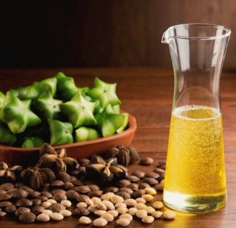

Sacha Inchi

El Sacha Inchi es una planta conocida como 'maní de los incas' oriunda de la selva del Perú, la planta genera una nuez de la que se extrae su aceite.
El aceite obtenido se caracteriza por tener un alto contenido de ácidos grasos Omega 3 (más del 48%), Omega 6 (36%) y Omega 9 (8%); además contiene antioxidantes, vitamina A y alfa-tocoferol y vitamina E.
{{agro.data.titulo}}
{{agro.data.descripcion}}